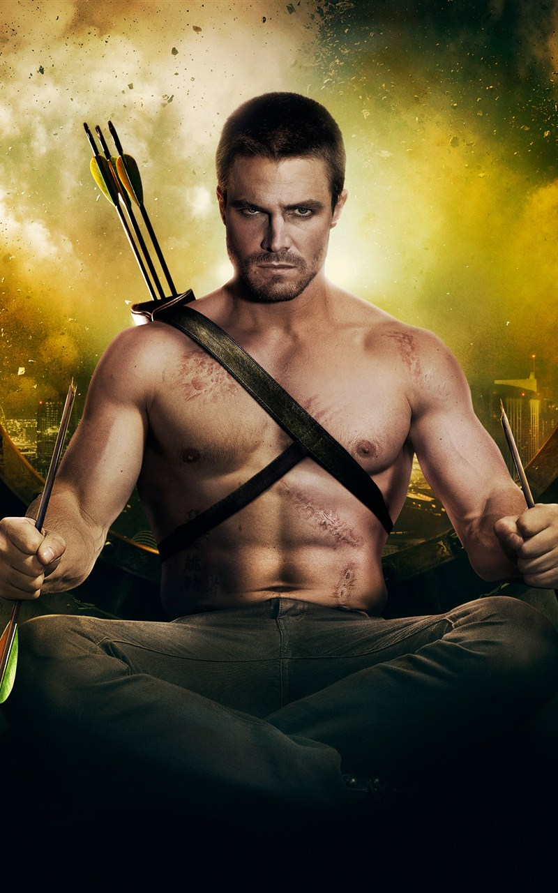
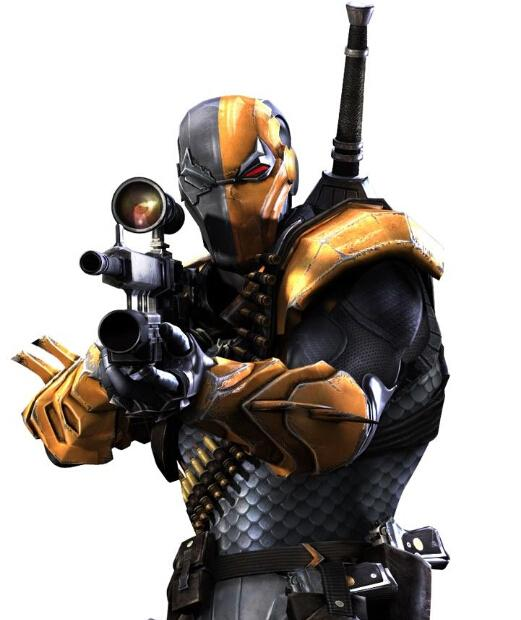
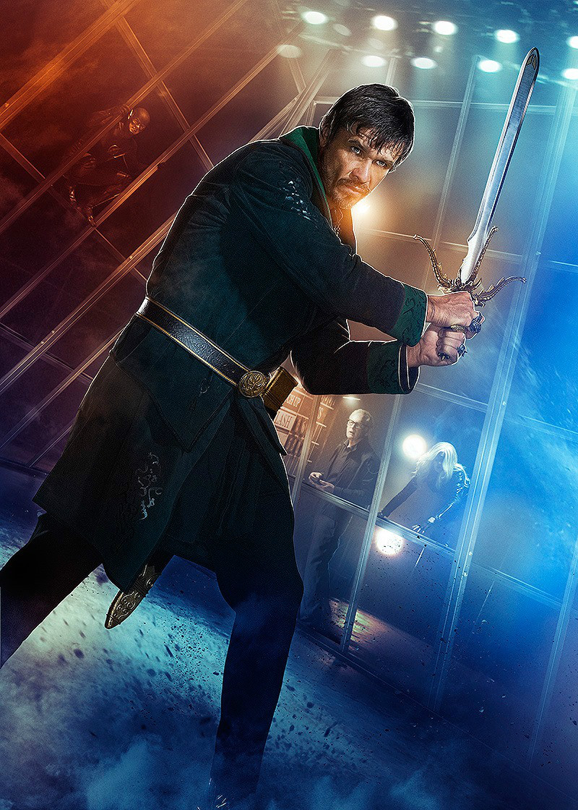
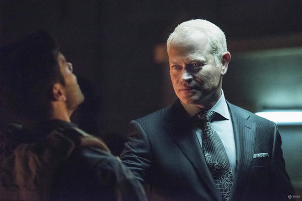

绿箭侠主要人物
绿箭侠/奥利弗‧奎恩：
<
奥利弗·奎恩（Oliver Queen），原是一位众所皆知名人，同时也是一位放荡的富二代，在一次船难中落难荒岛，为了求生存而练就了一身射箭与搏斗的本领，后来借着海盗船靠岸的机会，击败海盗，并利用他们的船重返。由于向往蝙蝠侠打击罪犯的行为而成为超级英雄绿箭侠，加入正义联盟，并跟黑金丝雀（Black Canary）交往。助手是快手和红箭。
第一季Boss:黑箭马尔科姆梅林(Malcolm Merlyn)

在原著漫画中黑箭客是Tommy Merlyn，他身兼绿箭侠的好友和一辈子的宿敌。在影集裡汤米仍为奥利佛的好友，只是黑箭的角色则改由汤米的父亲马尔肯来担纲。等同于将漫画的黑箭角色在电视剧中一分"
第二季Boss:丧钟（Deathstroke）

丧钟（Deathstroke）原名斯雷德·威尔森（Slade Wilson），是美国DC漫画中的一名超级恶人、反英雄角色。丧钟最早出场于1980年的《The New Teen Titans (vol.1) #2》，原绰号是“终结者”（Terminator），由于1984年上映的《终结者》电影过于出名，为了避免混淆，该绰号很少使用了。斯雷德是通过基因改造而制造的完美士兵，拥有惊人的力量、速度、自愈能力等；他残忍而狡猾，是世界上最伟大的战术家和刺客；他曾对抗过正义联盟的蝙蝠侠等人，而且是少年泰坦们的克星。
第三季Boss:忍者大师（Ra's Al Ghul）

。在《绿箭侠》第三季中，忍者大师是这一季中最大的反派。他与绿箭侠奥利弗决斗，打败了绿箭。之后他知道了绿箭的真实身份，使绿箭奥利弗不得不投入他的门下，甚至一度黑化。后来他预谋用人体生化武器摧毁整个星城（Star City），绿箭叛变，与大师决斗，杀死了大师，联盟也变为由马尔科姆·梅林支配。
第四季Boss:达米恩·达克（Damien Darhk）
<
实际上Damien Darhk这个人物在漫画中并不出名，但是他却很强大，而且比较年轻。他最突出的特点就是长了一张娃娃脸，虽然看起来只有二十来岁，但是却已经功成名就，成熟老练。他跟美国的黑社会组织联系密切，因此常与泰坦发生冲突，他还是H.I.V.E. 组织中的高级官员。他是一个高智商罪犯，领导着一个情报机构，但是却没有证据为他定罪。